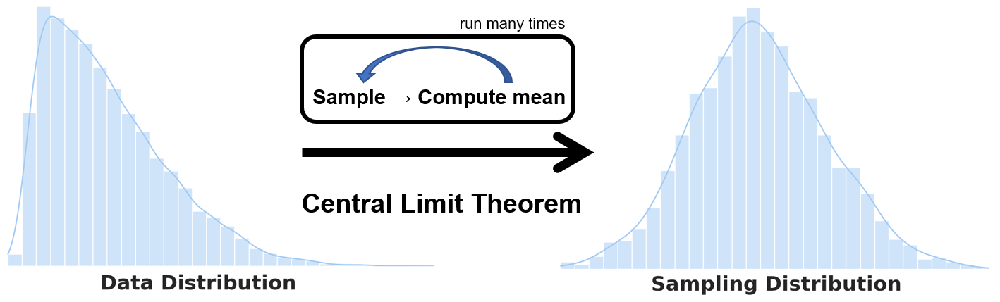
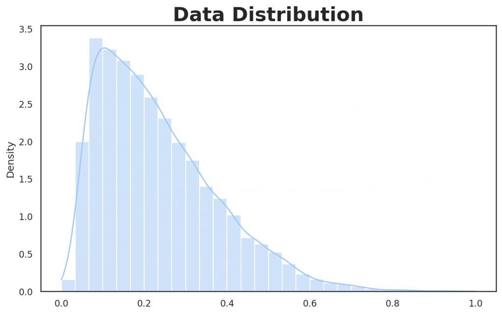
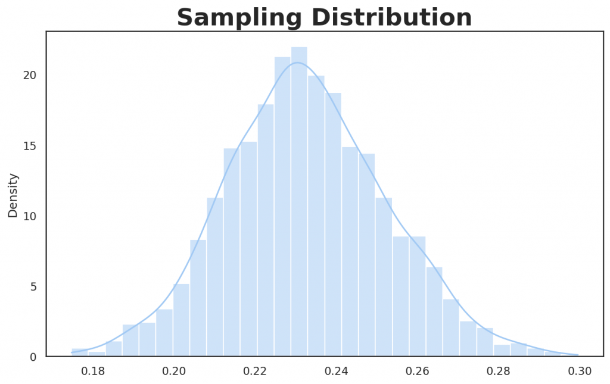

👉 This article is also published on Towards Data Science blog.
Introduction
It is important to distinguish between the data distribution (aka population distribution) and the sampling distribution. The distinction is critical when working with the central limit theorem or other concepts like the standard deviation and standard error.
In this post we will go over the above concepts and as well as bootstrapping to estimate the sampling distribution. In particular, we will cover the following:
- Data distribution (aka population distribution)
- Sampling distribution
- Central limit theorem (CLT)
- Standard error and its relation with the standard deviation
- Bootstrapping
Data Distribution
Much of the statistics deals with inferring from samples drawn from a larger population. Hence, we need to distinguish between the analysis done the original data as opposed to analyzing its samples. First, let’s go over the definition of the data distribution:
💡 Data distribution: The frequency distribution of individual data points in the original dataset.
Let’s first generate random skewed data that will result in a non-normal (non-Gaussian) data distribution. The reason behind generating non-normal data is to better illustrate the relation between data distribution and the sampling distribution.
So, let’s import the Python plotting packages and generate right-skewed data.
# Plotting packages and initial setup
import seaborn as sns
sns.set_theme(palette="pastel")
sns.set_style("white")
import matplotlib.pyplot as plt
import matplotlib as mpl
mpl.rcParams["figure.dpi"] = 150# Generate Right-Skewed data set
from scipy.stats import skewnorm
from sklearn.preprocessing import MinMaxScaler
num_data_points = 10000
max_value = 100
skewness = 15 # Positive values are right-skewed
skewed_random_data = skewnorm.rvs(a = skewness,loc=max_value, size=num_data_points, random_state=1)
skewed_data_scaled = MinMaxScaler().fit_transform(skewed_random_data.reshape(-1, 1))
# Plot the data (population) distribution
fig, ax = plt.subplots(figsize=(10, 6))
ax.set_title("Data Distribution", fontsize=24, fontweight="bold")
sns.histplot(skewed_data_scaled, bins=30, stat="density", kde=True, legend=False, ax=ax)
Sampling Distribution
In the sampling distribution, you draw samples from the dataset and compute a statistic like the mean. It’s very important to differentiate between the data distribution and the sampling distribution as most confusion comes from the operation done on either the original dataset or its (re)samples.
💡 Sampling distribution: The frequency distribution of a sample statistic (aka metric) over many samples drawn from the dataset (see Bruce and Bruce 2017). Or to put it simply, the distribution of sample statistics is called the sampling distribution.
The algorithm to obtain the sampling distribution is as follows:
- Draw a sample from the dataset.
- Compute a statistic/metric of the drawn sample in Step 1 and save it.
- Repeat Steps 1 and 2 many times.
- Plot the distribution (histogram) of the computed statistic.
import numpy as np
import random
sample_size = 50
sample_mean = []
random.seed(1) # Setting the seed for reproducibility of the result
for _ in range(2000):
sample = random.sample(skewed_data_scaled.tolist(), sample_size=50)
sample_mean.append(np.mean(sample))
print(f"Mean: {np.mean(sample_mean)} \n")
# Plot the sampling distribution
fig, ax = plt.subplots(figsize=(10, 6))
ax.set_title("Sampling Distribution", fontsize=24, fontweight="bold")
sns.histplot(sample_mean, bins=30, stat="density", kde=True, legend=False)>>> Mean: 0.23269
Above sampling distribution is basically the histogram of the mean of each drawn sample (in above, we draw samples of 50 elements over 2000 iterations). The mean of the above sampling distribution is around 0.23, as can be noted from computing the mean of all samples means.
⚠️ Do not confuse the sampling distribution with the sample distribution. The sampling distribution considers the distribution of sample statistics (e.g. mean), whereas the sample distribution is basically the distribution of the sample taken from the population.
Central Limit Theorem (CLT)
💡 Central Limit Theorem: As the sample size gets larger, the sampling distribution tends to be more like a normal distribution (bell-curve shape).
In CLT, we analyze the sampling distribution and not a data distribution, an important distinction to be made. CLT is popular in hypothesis testing and confidence interval analysis, and it’s important to be aware of this concept, even though with the use of bootstrap in data science, this theorem is less talked about or considered in the practice of data science (see Bruce and Bruce 2017). More on bootstrapping is provided later in the post.
Standard Error (SE)
The standard error is a metric to describe the variability of a statistic in the sampling distribution. We can compute the standard error as follows:
\text{Standard~Error} = SE = \frac{s}{\sqrt{n}}
where s denotes the standard deviation of the sample values and n denotes the sample size. It can be seen from the formula that as the sample size increases, the SE decreases.
We can estimate the standard error using the following approach[1]:
- Draw a new sample from a dataset.
- Compute a statistic/metric (e.g., mean) of the drawn sample in Step 1 and save it.
- Repeat Steps 1 and 2 several times.
- An estimate of the standard error is obtained by computing the standard deviation of the previous steps’ statistics.
While the above approach can be used to estimate the standard error, we can use bootstrapping instead, which is preferable. I will go over that in the next section.
⚠️ Do not confuse the standard error with the standard deviation. The standard deviation captures the variability of the individual data points (how spread the data is), unlike the standard error that captures a sample statistic’s variability.
Bootstrapping
Bootstrapping is an easy way of estimating the sampling distribution by randomly drawing samples from the population (with replacement) and computing each resample’s statistic. Bootstrapping does not depend on the CLT or other assumptions on the distribution, and it is the standard way of estimating SE[1].
Luckily, we can use [bootstrap()](https://rasbt.github.io/mlxtend/user_guide/evaluate/bootstrap/) functionality from the MLxtend library (You can read my post on MLxtend library covering other interesting functionalities). This function also provides the flexibility to pass a custom sample statistic.
from mlxtend.evaluate import bootstrap
avg, std_err, ci_bounds = bootstrap(
skewed_data_scaled,
num_rounds=1000,
func=np.mean, # A function to compute a sample statistic can be passed here
ci=0.95,
seed=123 # Setting the seed for reproducibility of the result
)
print(
f"Mean: {avg.round(5)} \n"
f"Standard Error: +/- {std_err.round(5)} \n"
f"CI95: [{ci_bounds[0].round(5)}, {ci_bounds[1].round(5)}]"
)>>> Mean: 0.23293
>>> Standard Error: +/- 0.00144
>>> CI95: [0.23023, 0.23601]Conclusion
The main takeaway is to differentiate between whatever computation you do on the original dataset or the sample of the dataset. Plotting a histogram of the data will result in data distribution, whereas plotting a sample statistic computed over samples of data will result in a sampling distribution. On a similar note, the standard deviation tells us how the data is spread, whereas the standard error tells us how a sample statistic is spread out.
References
Citation
@online{alizadeh2021,
author = {Essi Alizadeh},
editor = {},
title = {Data {Distribution} Vs. {Sampling} {Distribution:} {What}
{You} {Need} to {Know}},
date = {2021-01-11},
url = {https://ealizadeh.com/blog/statistics-data-vs-sampling-distribution},
langid = {en}
}